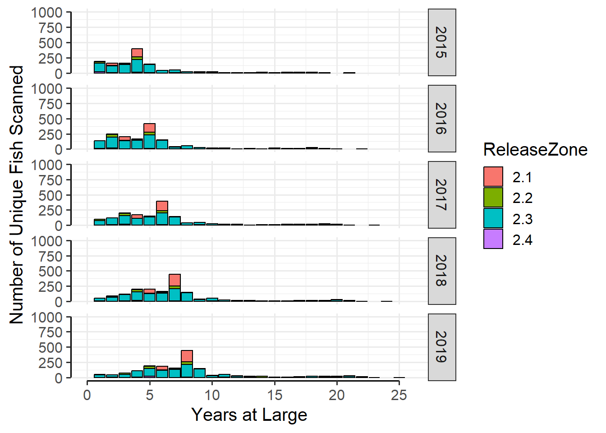
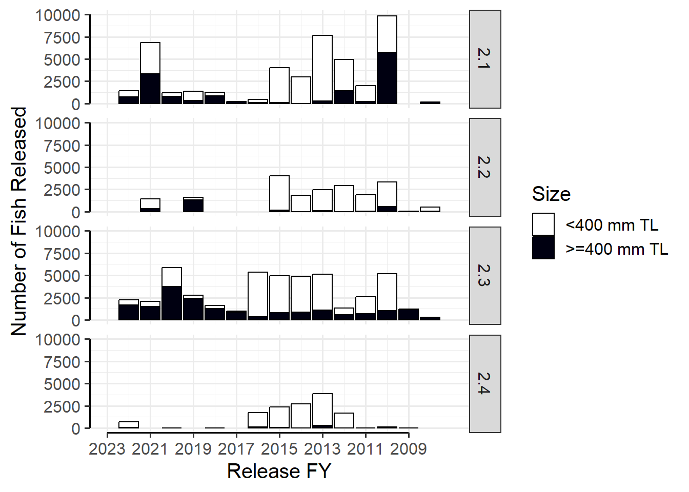

AgeStructure
Methodology
An age structure analysis was developed based on PIT scanning for zones within a reach that had at least 200 unique fish contacted. The age structure was developed for each fiscal year (FY; October through September) from 2015 to 2023. Age was based on years at large (YAL; the number of years post-stocking), because actual age for most fish released was unknown due to mixing of year classes in hatcheries.
The YAL for a given fish was calculated by subtracting one from the number of years between the release year (FY) and the scan year (FY). The calculated YAL for each fish was therefore the whole number of years a fish was at large just prior to the start of each scanning FY. For example, a fish released in FY 2020 and scanned in FY 2021 could have been at large for as little as one day (released September 30, 2020, the last day of FY 2020) up to one year (released October 1, 2019) at the beginning of FY 2021 and would have a calculated YAL age of zero.
Fish included in the analysis for each scan year must have been at large for more than one year; calculated YAL equal to or greater than one. YAL was calculated for all fish repatriated to MSCP Reach 3 with a TL measurement and PIT scanned. Age structure was examined using stacked bar charts produced separately by zone and scan year, each stack color coded by zone of release. To maintain a consistent x-axis range between figures, all fish 25 YAL and older were given the age of 25 YAL (max age was 25 YAL).
TL at release is known to significantly impact post-release survival (Marsh et al. 2005). To illustrate the impact of release size distribution on age structure, release cohorts for each zone and year were summarized in bar charts with release numbers divided between two size classes: shorter than 400 mm TL, and equal to or longer than 400 mm TL. This size class cutoff was smaller than the TL generally considered as a safe target size for release; 500 mm TL (Wisenall et al. 2015). However, a longer size cutoff resulted in many years with no fish released in the larger size class. The size cutoff was reduced to increase the number of sample cohorts available for analysis.
Results
The age structure for zone 3.1 is shown in Figure 1 and Figure 2.

The age structure for zone 3.2 is shown in Figure 3 and Figure 4.

The release size plot for all zones within the reach is shown in Figure 5.
